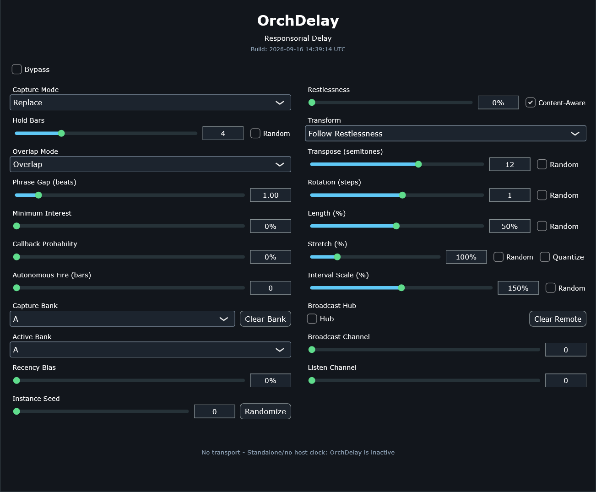

29 real parameters, one static view — big enough that this guide switches from one marker per control to one marker per region, with full tables underneath carrying the exhaustive detail. Live notes are captured into a buffer and echoed back exactly once (no looping/feedback), optionally transposed, retrograded, inverted, rotated, truncated, transformed by M7, time-stretched, or interval-scaled — either an explicit manual choice or a seeded, phrase-content-aware proposal. A 4-slot memory system (3 local banks + phrases received from other OrchDelay instances) lets it echo something other than just the most recent phrase, on demand or entirely on its own clock.
One static view, two columns: capture & timing on the left (how a phrase gets buffered and when it fires back), transform on the right (what changes about it, plus the cross-instance broadcast controls at the bottom). The status line folds every session counter into one readout — the fastest way to tell a genuinely silent session apart from one that's just still mid-hold.

hub / hub(busy) / client(ok) / client(--)) plus a running count of phrases received from other instances.9 real transforms plus "Follow Restlessness" (a proposal, not a transform itself). All operate directly on the buffered note data — OrchDelay never talks CC-to-MPL, it reimplements the math itself. Two deliberate divergences from MPL's own vocabulary: Inversion mirrors around the phrase's own first/anchor note (not a fixed axis — keeps an echo in the register the player was actually in), and Retrograde is a true whole-phrase time reversal (not a step-grid read-position reversal, which has no meaning for a real-timestamp phrase).
| Transform | Amount param | Range | What it does |
|---|---|---|---|
| None | — | — | Verbatim echo, unchanged. |
| Transpose | transposeSemitones | -48…48 | Fixed pitch shift, clamped to 0-127. |
| Retrograde | — | — | Whole-phrase time reversal around its own midpoint, each note's own duration preserved. |
| Inversion | — | — | Pitch-axis mirror around the phrase's own first/anchor note. |
| Rotation | rotationSteps | -16…16 | Cyclic reassignment of which captured note's pitch/velocity/channel sounds at each onset slot; wraps to the phrase's own note count. |
| Length | lengthPercent | 1…100% | Truncates to the first N% of notes by onset order — note count only, never rescales timing. |
| M7 | — | — | Pitch-class ×7 mod 12, octave preserved — a pure per-note operation. |
| Stretch | stretchPercent (+ Quantize) | 25…400% | Proportional time-stretch around the phrase's own start. Quantize restricts the actual ratio used to a notation-friendly vocabulary (25/33.3/50/66.7/75/100/133.3/150/200/300/400%) instead of an arbitrary in-between value. |
| Interval | intervalScalePercent | 0…300% | Scales every interval from the phrase's own anchor note — >100% widens the melodic shape's leaps, <100% narrows them. Defaults to 150% so picking it is immediately audible. |
Transpose, Rotation, Length, Stretch, and Interval each have their own Random toggle — drawn deterministically per phrase from Instance Seed + phrase count (reload-stable, never a bare RNG). Transpose/Rotation draw a symmetric range around 0; Length uses its own slider as a ceiling (no negative meaning); Stretch/Interval draw from [100%, slider] on whichever side of 100 the slider sits, since their own neutral point is 100%, not 0.
A development-section workflow: build up new material in one bank while a different one keeps playing, then switch over. Callback Probability and Autonomous Fire are the only two consumers of the pool, and they always share the SAME Active Bank — splitting them would let the pool a track is "currently developing from" silently fork with no musical rationale.
| Control | Range | Role |
|---|---|---|
| Capture Bank | A · B · C | Where a newly-closed phrase gets written. Never Remote — that bank is populated exclusively by incoming broadcasts. |
| Active Bank | A · B · C · Remote | Where Callback Probability AND Autonomous Fire both read from. Switch this to bring a different bank's material into play without touching what's currently being captured. |
| Clear Bank | button | Empties whichever bank Capture Bank currently points to. |
| Recency Bias | 0–100% | 0% (default) = flat uniform pick across the whole pool, exactly the original behavior. Above 0%, the draw weights pool index i as (i+1)^exponent (exponent climbing 0→4) — increasingly favoring the newest few entries. |
Each bank holds the most-recent 8 phrases actually PLAYED (never a callback substitution itself), oldest evicted first once full.
Lets phrase material cross between OrchDelay instances directly, in-process, over a local loopback relay — no MIDI cable between tracks. Every instance is symmetric: it can publish and/or subscribe at once, regardless of which one happens to run the shared relay. Absolute host ppq needs no translation crossing instances, since every instance already reads the same transport — this is what makes direct pool-sharing tractable at all.
hub — if it instead reads hub(busy), another instance already has Broadcast Hub on. Listeners should read client(ok) once connected, with remoteIn counting up as phrases arrive.Multiple independent broadcaster/listener groups can share the same one Hub without cross-talk, each isolated on its own channel number — like several stations sharing one transmission tower. An instance's own Broadcast Channel and Listen Channel are independent, so it can also listen on one channel while publishing what it does with that material on a different one, chaining instances into a relay rather than only a star topology.
All 29 parameters are host-automatable APVTS parameters — there is no plugin-internal state hidden from automation, unlike some of this plugin's denser siblings.
| Parameter | Range / Choices | Default |
|---|---|---|
| bypass | Off/On | Off |
| captureMode | Replace · Overlay · Duck | Replace |
| holdBars | 0–16 (0 = pause capturing) | 4 |
| holdBarsRandom | Off/On | Off |
| overlapMode | Overlap · Wait · Skip | Overlap |
| phraseGapBeats | 0.25–8.0 beats | 1.0 |
| minimumInterest | 0–100% | 0% |
| callbackProbability | 0–100% | 0% |
| autonomousFireBars | 0–16 (0 = off) | 0 |
| captureBank | A · B · C | A |
| activeBank | A · B · C · Remote | A |
| recencyBias | 0–100% | 0% |
| instanceSeed | 0–127 | 0 |
| restlessness | 0–100% | 0% |
| contentAwareWeighting | Off/On | On |
| manualTransform | Follow Restlessness · None · Transpose · Retrograde · Inversion · Rotation · Length · M7 · Stretch · Interval | Follow Restlessness |
| transposeSemitones / transposeRandom | -48…48 | 12 / Off |
| rotationSteps / rotationRandom | -16…16 | 1 / Off |
| lengthPercent / lengthRandom | 1–100% | 50% / Off |
| stretchPercent / stretchRandom / stretchQuantized | 25–400% | 100% / Off / Off |
| intervalScalePercent / intervalRandom | 0–300% | 150% / Off |
| linkHub | Off/On | Off |
| broadcastChannel | 0–8 (0 = off) | 0 |
| listenChannel | 0–8 (0 = off) | 0 |
The status line's own cap/cls/fire counters are the fastest way to
tell a genuinely silent session apart from one that's just mid-hold: MIDI never arrived at all
(cap stays 0) vs. arrived but never closed into a phrase (cls stays 0) vs. closed but
never fired yet (fire stays 0, still waiting on Hold Bars).